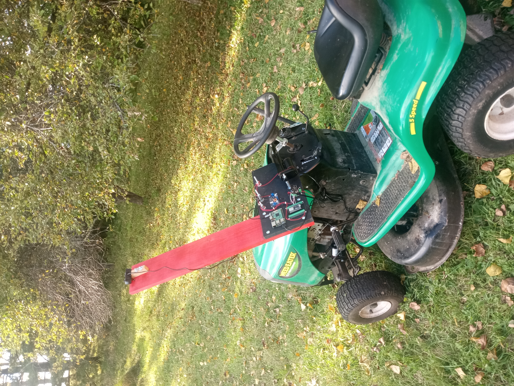

I am developing a low‑cost autonomy retrofit kit for garden tractors and small utility vehicles. The system adds servo‑based steering, electronic control, and autonomy‑ready hardware to existing equipment commonly used in rural and Indigenous communities. The goal is to provide practical, affordable automation for land maintenance, agriculture, and community services.
Many rural and Indigenous communities rely on aging garden tractors and small utility vehicles for essential work. These machines lack modern safety features, automation, and remote operation capabilities. Commercial autonomous equipment is expensive, proprietary, and not designed for community‑led maintenance or harsh environments.
A bolt‑on autonomy kit that includes:
The kit transforms existing garden tractors into autonomy‑ready platforms without requiring new equipment purchases.
A fully functional, internet‑controlled prototype is now being tested in real‑life conditions. The system supports remote steering, throttle control, and live telemetry over a wireless link, demonstrating reliable operation on actual terrain with real equipment.
Demonstration of the remote controlled tractor and control system in action.
Alex Likhterman
Mechanical & Embedded Systems Engineer
40+ years experience in mechanical design, robotics, CNC machinery, UAV/VTOL prototyping,
and embedded control systems.
I am applying to the Smart Mobility Tech Accelerator to:
Email: telecom55@gmail.com
Phone: 647‑857‑9550